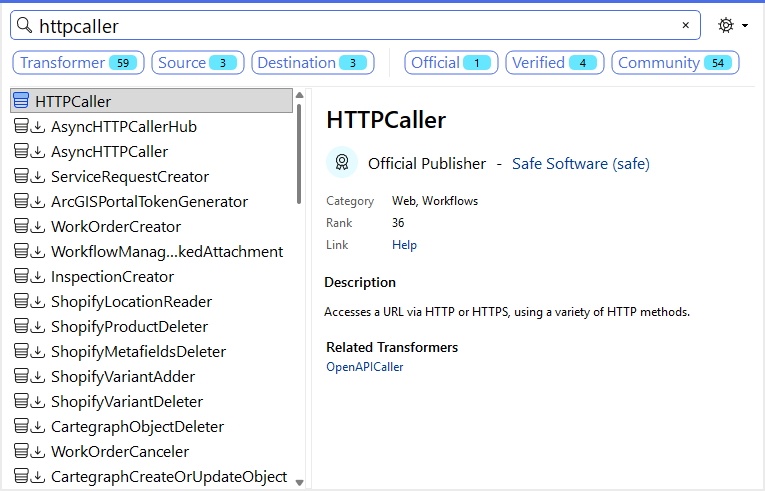
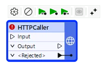
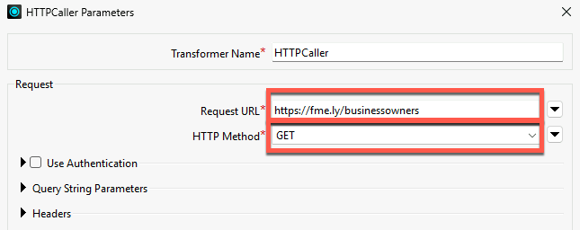
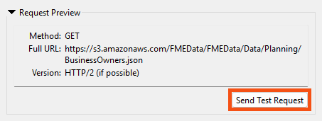
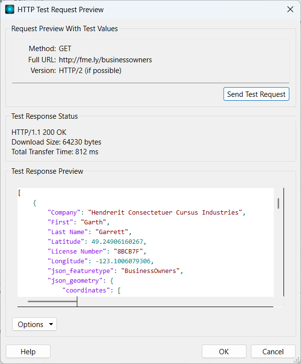
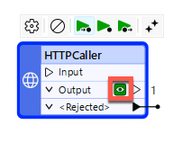
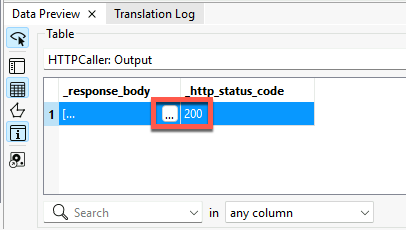
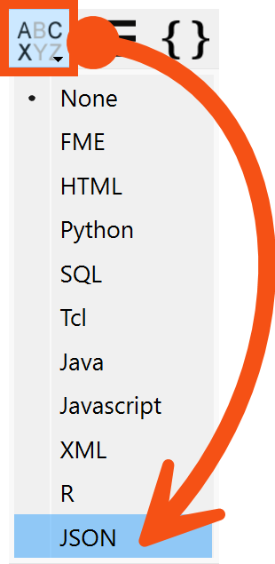

Learning Objectives
After completing this lesson, you’ll be able to:
- Define a transformer.
- Make HTTP calls using the HTTPCaller transformer.
- Turn a JSON response into features using the JSONFlattener transformer.

Learning content in the FME Academy presents a user story that addresses their data integration challenges with FME. You should follow along with their actions using your FME installation (2026.1 or later) or request an on-demand virtual machine. Some lessons will require you to follow their steps or take additional steps to answer a quiz question.
The Resources section will provide links to interactive tutorials and starting workspaces when necessary.
Instructions
In this lesson, you will:
- Scroll down to read the text below.
- Complete the exercise by following the steps.
- Complete the Quiz toward the bottom of the page.
- Optional: Let us know if you found this lesson relevant to your role by filling out the survey at the bottom of the page.
- Click 'Next' to mark the lesson complete.
Terminology
Transformer
An FME Workbench object that carries out feature restructuring. There are hundreds of different transformers that perform different types of restructuring. Transformers are primarily used to transform data, changing its content or structure. However, some transformers can also read data.
Schema
A schema is a formal definition of a dataset’s structure, including table names, attribute names, and attribute data types (e.g., text, integer, float). With spatial data, the geometry type (point, line, polygon, etc.) is also considered part of the schema. You might also hear this referred to as a data model.
Resources
- Complete workspace
- For Safe Software-hosted training courses, you can find this on your virtual machine here: C:\FMEData\Workspaces\IntegrateDataWithTheFMEPlatform\read-web-data-complete.fmw
- BusinessOwners.json
- C:\FMEData\Data\Planning\BusinessOwners.json
Scenario

Jennifer is a GIS Specialist working for a local government. She needs to read business license data from an API and write it to an Esri geodatabase, a widely used spatial database. The API is used internally, while the geodatabase is used in public-facing applications. Therefore, she wants to edit the attribute names and filter out features with revoked business licenses from the final geodatabase to ensure the data is appropriate for public display.
Jennifer is working with the same BusinessOwners dataset as Sven in the previous course, but she’s reading it from an API rather than an Excel spreadsheet.
So far, we've been using readers to read data. However, in some cases, you will read data using transformers. Transformers are primarily used to transform data, changing its content or structure. However, some transformers can also read data.
In this exercise, we'll learn how to read web data and use transformers to transform its content and structure.
1) Start FME Workbench
- Start FME Workbench (2026.1 or later).
- Click New in the Start tab.

2) Add an HTTPCaller
The standard way to make an API call using FME is with the HTTPCaller transformer.
- Click on the blank canvas to ensure it's focused.
- Type HTTPCaller. As you begin to type, the Quick Add dialog appears.

- Double-click HTTPCaller or press Enter with it selected in Quick Add to add the transformer to the canvas:

3) Configure the HTTPCaller
- Double-click the HTTPCaller to open its parameters and configure them.
- All transformers have parameters you can (or must, depending on the transformer) configure. How each is configured depends on the transformer, as they all do different things. To learn how to configure a transformer, check out the FME Help, which is accessible via the Help button at the bottom left of all transformer dialogs.
- Enter
https://fme.ly/businessowners for the Request URL and choose GET for the HTTP Method.

4) Test the HTTPCaller
It is vital to test transformers after configuring them. Normally, you can just run the transformer you just configured and then inspect the output in Data Preview to ensure it is correct. However, the HTTPCaller includes a special Send Test Request button we can use to test our query without running the workspace.

The HTTP Test Request Preview dialog opens. At this point, if the request required test values, we could enter them.
- It doesn't, so just click Send Test Request.
- The Test Response Preview section is populated with the JSON response body from the GET request.

Looks good! We get back JSON with the business owner information.
- Click OK twice to close the transformer parameters.
5) View HTTPCaller Response Attribute
- Click the Run button.
- The HTTPCaller makes a single HTTP GET request to the request URL. It returns a JSON payload stored as a text attribute in the default attribute _response_body.
- We want to view this attribute to see the results of the the HTTP call.
- Data Preview should automatically open to show the HTTPCaller's data cache, but if it doesn't, click the green cache icon on the HTTPCaller's Output port.

- The results of the call are displayed in Data Preview. You should notice three things.
- The JSON is stored in the _response_body attribute. Because it's quite a lot of text, the cell has an ellipsis button [. . .]. Clicking that will open the entire text in a separate dialog.
- Additionally, the HTTPCaller added an attribute called _http_status_code. This reports the HTTP status code, indicating whether the call succeeded. A code of 200 indicates a successful call.
- Attributes created by transformers use an underscore _ prefix to indicate that FME created them.

- Click the ellipsis button [. . .] in the _response_body attribute.
- A dialog appears showing the full JSON payload.
- Click the Syntax Highlighting button in the bottom-left of the dialog (ABCXYZ) and choose JSON to format the text as JSON.

Now, we can examine the response to understand its structure. You can see that it consists of an array of JSON objects, indicated by the opening and closing square braces []. Each object has attribute-value pairs with a predictable schema. It also contains some geometry information.
{
"json_featuretype": "BusinessOwners",
"First": "Garth",
"Last Name": "Garrett",
"Company": "Hendrerit Consectetuer Cursus Industries",
"License Number": "8BCB7F",
"Longitude": -123.1006079306,
"Latitude": 49.24906160267,
"json_ogc_wkt_crs": "GEOGCS[\"WGS 84\",DATUM[\"WGS_1984\",SPHEROID[\"WGS 84\",6378137,298.257223563,AUTHORITY[\"EPSG\",\"7030\"]],AUTHORITY[\"EPSG\",\"6326\"]],PRIMEM[\"Greenwich\",0,AUTHORITY[\"EPSG\",\"8901\"]],UNIT[\"degree\",0.0174532925199433,AUTHORITY[\"EPSG\",\"9122\"]],AUTHORITY[\"EPSG\",\"4326\"]]",
"json_geometry": {
"type": "Point",
"coordinates": [
-123.1006079306,
49.2490616027
]
}
}
This response matches her expectations. Our goal is to convert these JSON attribute-value pairs into FME features.
Learn More
- If you are unfamiliar with HTTP requests, you can learn more here.
- We "faked" an API request here for simplicity's sake. Usually, you'd make a request that included authentication and query parameters, all possible with the HTTPCaller. But to simplify this example, we'll GET a JSON payload directly. You could also use a JSON reader, which would work fine. However, the HTTPCaller method is generally better when working with real API data.
- Learn more about schema in FME.
Leave Us Feedback on This Lesson